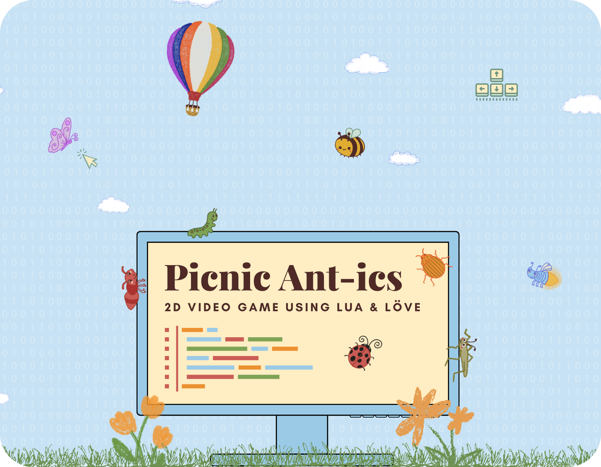
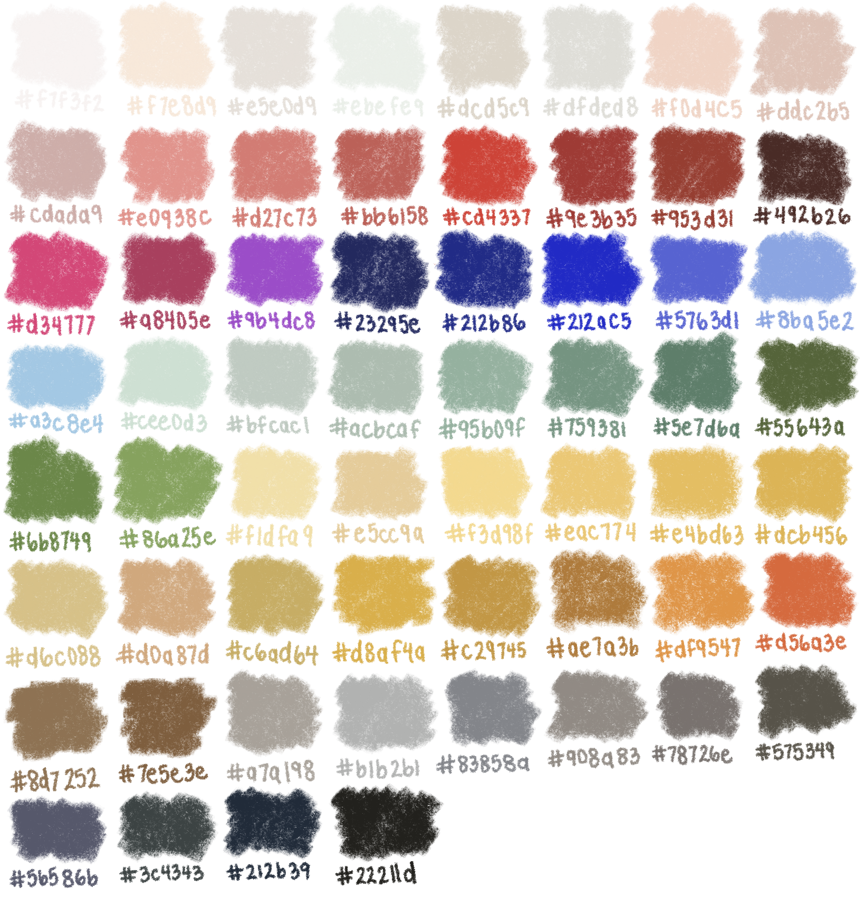
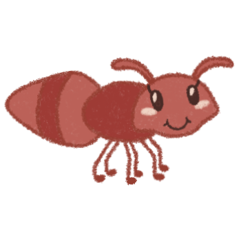
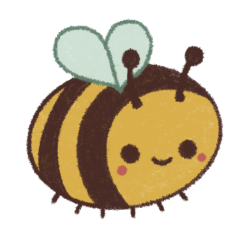
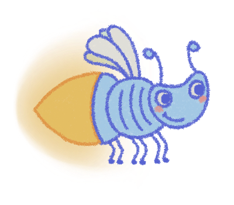
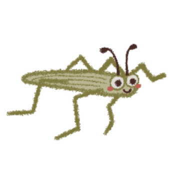

View projects in game design, data visualization, mobile applications, & more

Post-Baccalaureate
Research Project x
Final Project for
HarvardX's CS50: Intro to Game
Development course
Oct 2023 - June 2024
Kiley Matschke
Lua/LÖVE
Procreate
As Post-Baccalaureate Fellow at Barnard College's Computational Science Center, one of my responsibilities
was to pursue an independent research project. Over the course of the 2023 - 2024 academic year, I
developed a 2D video game using the Lua programming language and LÖVE game engine.
My game follows the journey of an ant heading to a picnic when a sudden weather disaster strikes!
She seeks shelter in a nearby home, discovering new friends along the way. Together, they build a picnic
using ingredients throughout the kitchen, simultaneously navigating obstacles such as a bug-hungry cat,
power outages, and limited time before the humans return. Picnic Ant-ics is entirely hand-illustrated
using the digital art program Procreate, in order to create a universe that feels playful and childlike.
My interest in game design came from an online course that I began during Fall 2023, namely Harvard X’s
CS50G: Intro to Game Development. Through personal research — supplemented by the course’s video lectures
and notes — I learned the fundamentals of game ideation and creation. Building this game has deepened my
fascination with the intersection of design, computing, and user interfaces: an extension of my undergraduate
studies in Computer Science and Psychology. Interacting on such a minute, digital scale has taught me to
appreciate every little pixel, sound effect, and detail that goes into an endeavor like this. I plan to
continue expanding upon this project in the future and perhaps even explore 3D game environments. I feel
tremendously grateful for the support I have received from my colleagues at the Computational Science Center,
Computer Science Department, Beyond Barnard, and all of the other incredible Barnard Center Post-Baccs.

Antoinette the ant

Beatrice the bumblebee

Sparky the firefly

Walter the pond skater

"music for bugs" album by camiidae
Game design is all about world-building and forging life on a digital scale. In order to create, it's necessary to envision the player first. Everything on and off of the screen contributes to the game's fluidity. It's a process that precipitates creativity and iterative problem-solving. It was a pleasure to work on Picnic Ant-ics as part of my final project for CS50G, as well as my independent research project for my Post-Bacc Fellowship at Barnard. Not only did I learn about the technical tools behind so many successful games, but I also learned about the interactions between technology, art, and storytelling. In the future, I hope to look back at this project as a symbol of experimentation and expression, and perhaps add updates to its complexity via more levels, characters, and challenges.
Special thanks to the HarvardX's CS50G and EdX for providing the resources to learn game design and development.